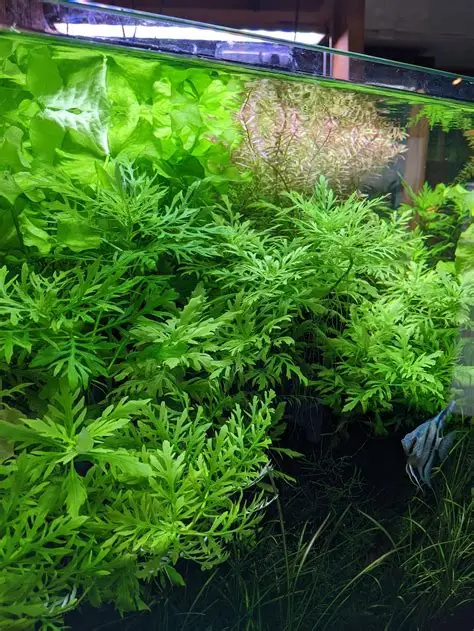
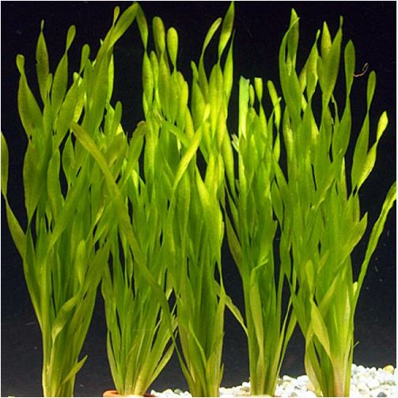
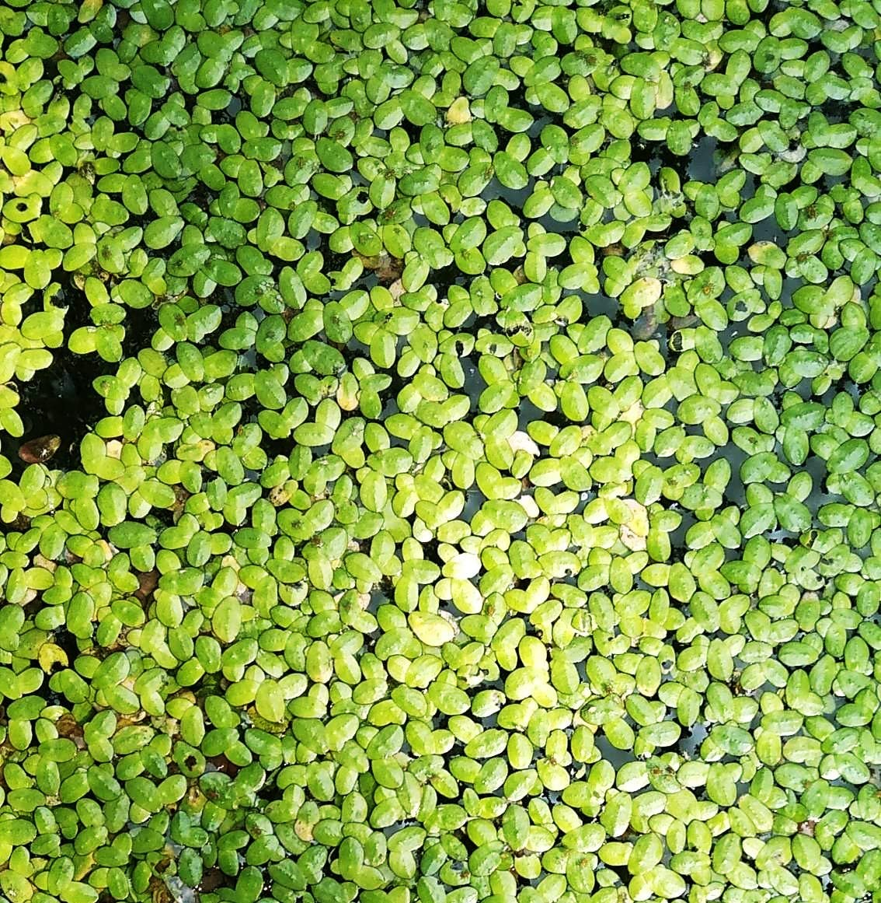
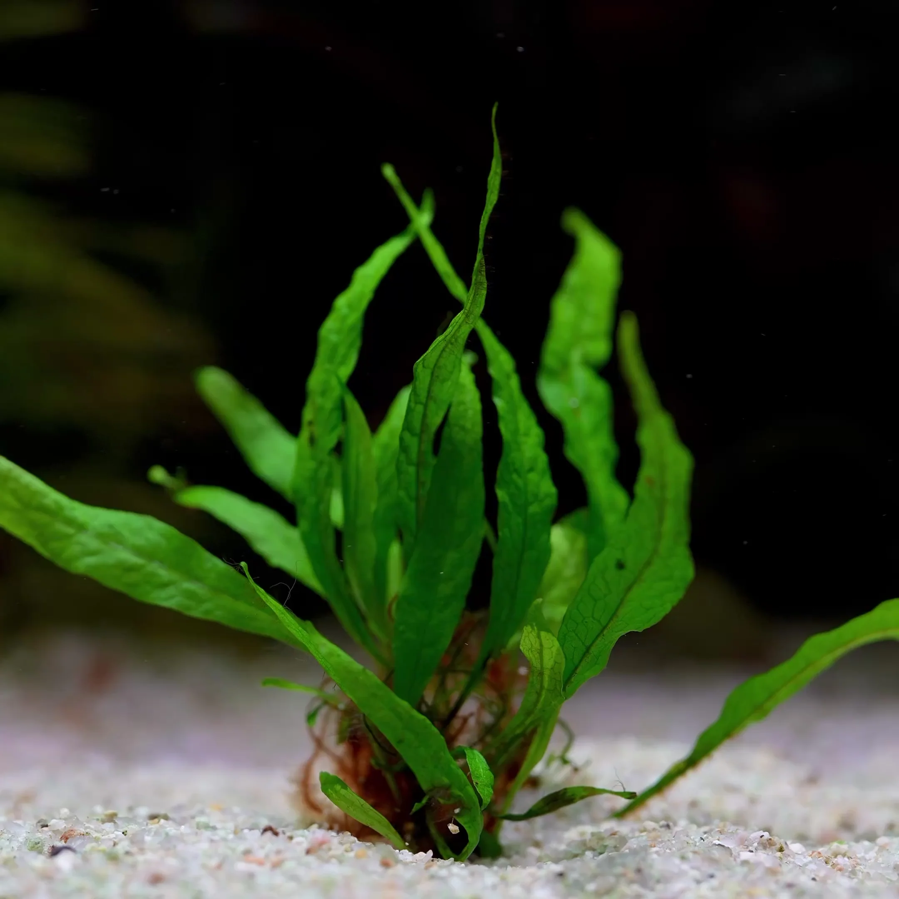
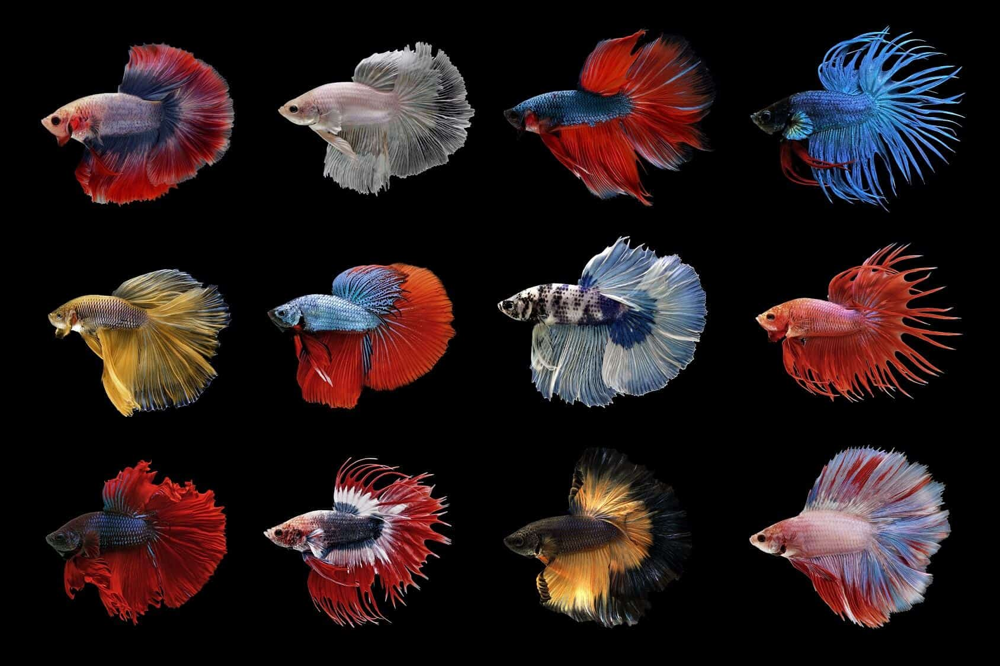
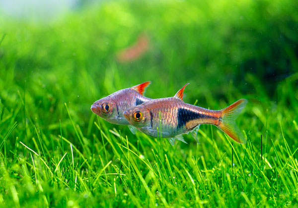
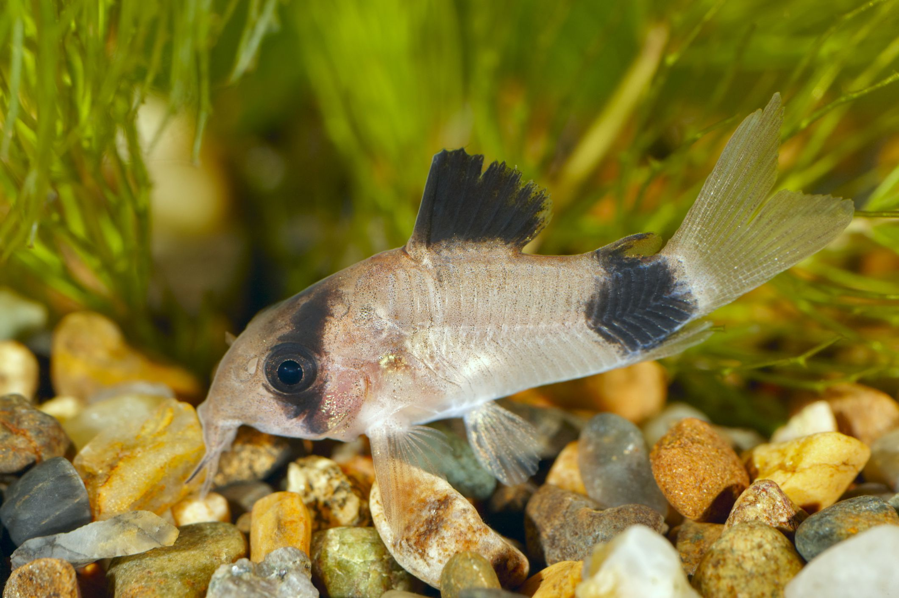
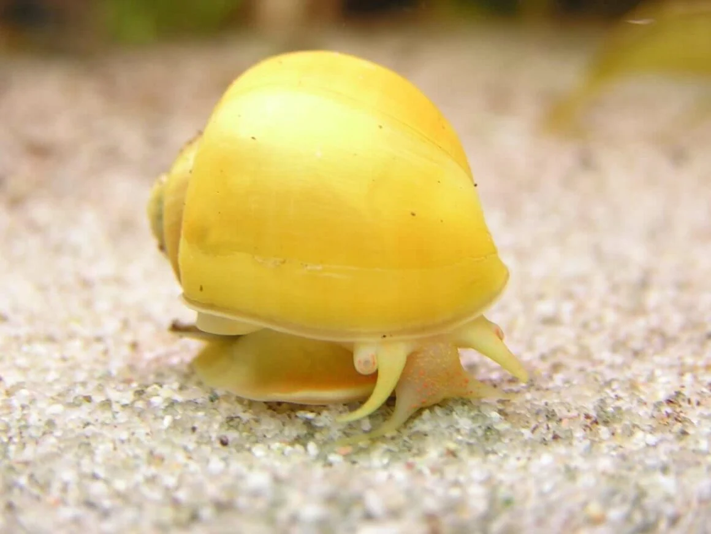

Selecting Plants and Fish
When choosing plants and fish, it is important to consider the tank size as well as what lives well together. Some plants may need more space, and some fish may not get along with others. There are many aspects to consider, but here are some of the best plants and fish for most planted tanks.
Aquatic Plants

Water Wisteria
Water Wisteria
Water wisteria thrives in well-lit spots with nutrient-rich substrate. It grows fast, enhances water quality, and gives fish a great place to hide.

Vallisneria
Vallisneria
Vallisneria is a fast-growing plant with ribbon-like leaves that helps create a lush aquascape. It can grow tall and spread, forming an underwater forest.

Duckweed
Duckweed
Duckweed grows on the surface of the water and provides natural shade. It helps fish feel more secure and can improve water quality.

Java Fern
Java Fern
Java Fern is one of the best plants for beginner tanks. It likes to attach to rocks or driftwood and provides thick leaves for fish to rest on.
Fish for Planted Tanks

Betta
Betta
Betta fish are very popular and often have unique personalities. They enjoy plants, hiding places, and resting spots like leaves or caves. Male bettas should usually be kept alone, but females may live together.

Rasboras
Rasboras
Rasboras are tiny, colorful, schooling fish that love to swim around. They enjoy low stress environments, so it is also good to provide them with shady hiding spots and plenty of plant cover.

Corydoras
Corydoras
Corydoras are bottom-dwelling fish that are peaceful and very active. They love to swim around and through heavily planted tanks. It is recommended to keep them in a school of 5 as they are social fish.

Mystery Snail
Mystery Snail
While not technically a fish, one of the best creatures for a planted tank are mystery snails. These snails scavenge and eat debris, helping to keep the tank clean, and they are very fun to watch. They enjoy climbing on top of plants, hardscape and even just float around.